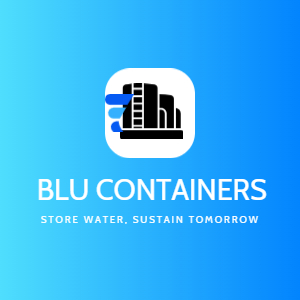

In this Project, we analyse the distribution of sales in a fictitious company, capturing their sales distribution by country, segment and ship mode distribution, product quantity distribution in our top countries and finally the relationship between sales and price, discounts and net profit.

This Project Features a fictitious company, Blu Containers, manufacturer of environmentally friendly water storage tanks made of recycled materials where I Model it's 3 Financial Statements. I use insights and Ratios to advice investors and potential investors if the company would be a good addition to their portfolio of not based on their investment objectives and constraints .